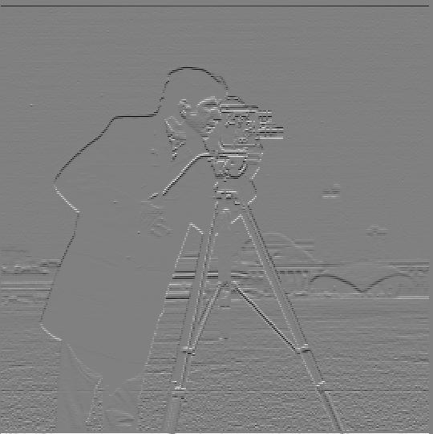
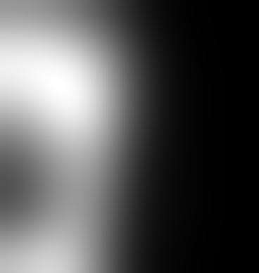
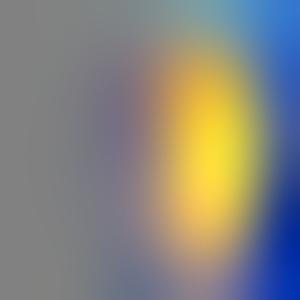
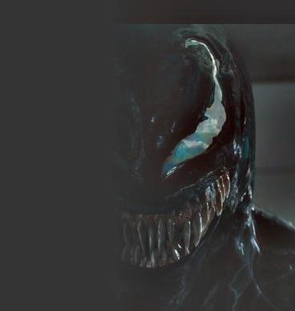

Partial Derivative in y

Partial derivatives: Separately calculate the partial derivatives in x and y direction, which is to convolve the image with the given finite difference vectors.
scipy.signal.convolve2d, we want to first turn the given finite
difference vectors into 2-d matrices. So the finite differences we use are [[1, -1]] and [[1], [-1]].Gradient magnitude: For each point, this is the length of the vector whose components are the two partial derivatives at this point as calculated above, which can be calculated as (∂x2 + ∂y2)1/2
The following outputs are with the same method as above, except that the original image is blurred with Gaussian first. Differences after applying Gaussian filter:
The output with the Gaussian filter:
The DoG filters (Gaussian blur of the partial derivatives):
A single convolution with the DoG filters results in the same images as two convolutions above. These are shown below:


The following images are processed with unsharp masking.

The following sharp image is blurred, and resharpened with the technique above. Though the image in small scale looks similar, upon close inspections, the fine details with high frequencies (the hair and winkles on the face) are lost, which is inevitable after Gaussian blur, and the image in general is over contrasted in the attempt to look sharp. Though unsharp masking can "sharpen" the image to some extent, it cannot revert ablurred image back to its sharp state.

The hybrid images are produced with the following techniques.
Example 1:
More examples:
Failed example: It fails because the shapes do not really match up, and the leaves are too different from each other. If the apple is blurred more it might be better.

Apply the process for gray-scaled images (described above in Part 2.2) to each channel of the color image. Combine the channels in the end.
The specific use of colors to enhance the effect depends on the specific images used. For example, the fan is by itself black and white, so the comparison below does not generate very meaningful results. But in general, the colored high frequencies and non-colored low frequencies give the best results.
| No Color | Colored High frequency | Colored Low frequency | Full Color |
|---|---|---|---|
 |
|||
 |
Gaussian stack:
Laplacian stack:
Mask: The following Oraple is done with the regular mask. The left half is all 1 and the right half is all 0 for the apple. Reversed for the orange.
Multiresolution blending:
The following set of images show layers of the Laplacian stacks and the final combined images.
Process is described above in Part 2.3.
Regular masking (as in Part 2.3):
 |
||
|  | ||
Irregular masking:
Mask: The eye region is active for the eye image. Reversed for the face.
This blending is not ideal, and has more nuance to it. See its color counterpart for more information.
 |
||
Mask: The robot hand is active for the robot hand image. Reversed for the human hand.
This blending is not ideal, and has more nuance to it. See Bells & Whistles (Extra Points) 4/4 for more information.
Colored multiresolution blending: Apply the process for gray-scaled images (described above in Part 2.3) to each channel of the color image. Combine the channels in the end.
 |
 | |
|  | ||
This blending is not ideal, and has more nuance to it. See Bells & Whistles (Extra Points) 4/4 for more information.
 |
||
The gaze case is special. Because the eyes are taken from comics, it does not have the natural and sophisticated change of color as real images. We only want the red channel to be blended.
 |
||
In the last example above (hand shaking), the regular technique results in aura around the robot hand. This is because the white background gets considered when doing Gaussian blending.
A solution I found was to fill the background with the color of the skin, so that the Gaussian blending will only blend the actual color (the skin color) as desired.
This is achieved by first recognizing the region that is not background (with color threshold), and average the rest of the active regions' colors. Then fill the background with that color.
All these results are based on the knowledge of human perception, which is not achievable solely with Computer Science. In addition to the technical details of this project, it emphasizes the power and significance of the interdisciplinary thinking and applications that I should constantly be aware of.
All images are from open online search.